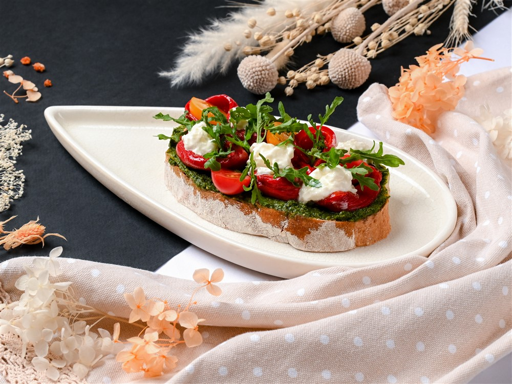

Рецепт Брускетты

Ингредиенты:
- 1 багет или чиабатта
- 3-4 спелых помидора
- 2-3 зубчика чеснока
- Базилик по вкусу
- Оливковое масло по вкусу
- Соль и перец по вкусу
Приготовление:
- Нарежьте багет или чиабатту на кусочки толщиной около 1-2 см.
- Обжарьте хлеб на гриле или в тостере до золотистого цвета.
- Помидоры нарежьте мелкими кубиками и смешайте с солью, перцем и нарезанным базиликом.
- Чеснок можно нарезать или натереть и натереть им горячий хлеб.
- Выложите томатную смесь на кусочки хлеба и полейте оливковым маслом перед подачей.